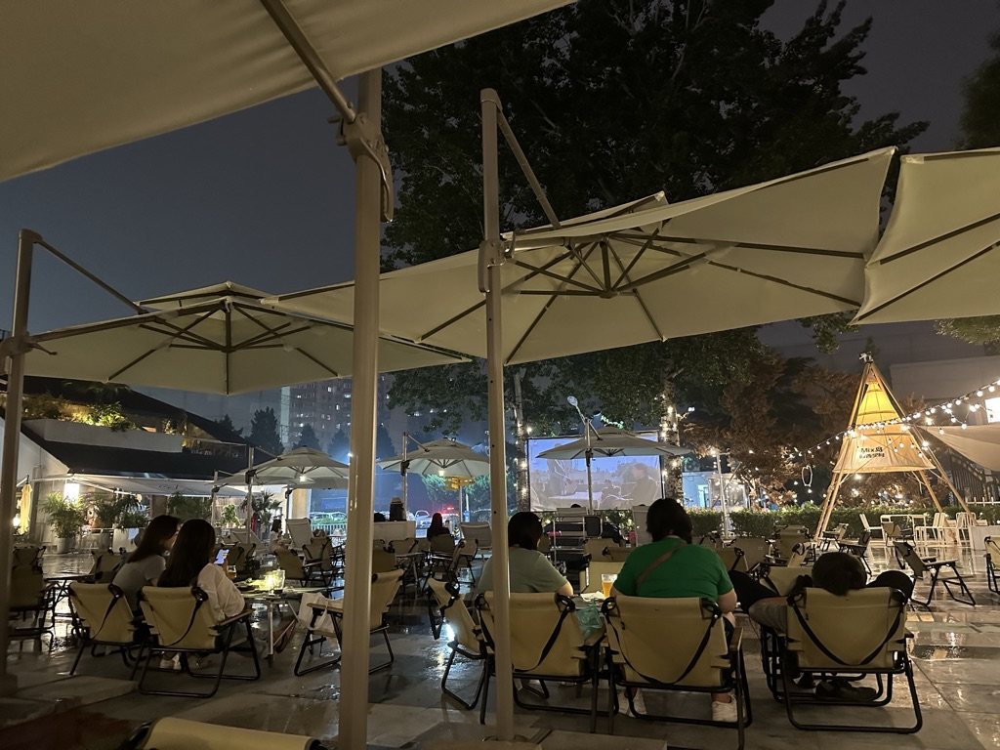
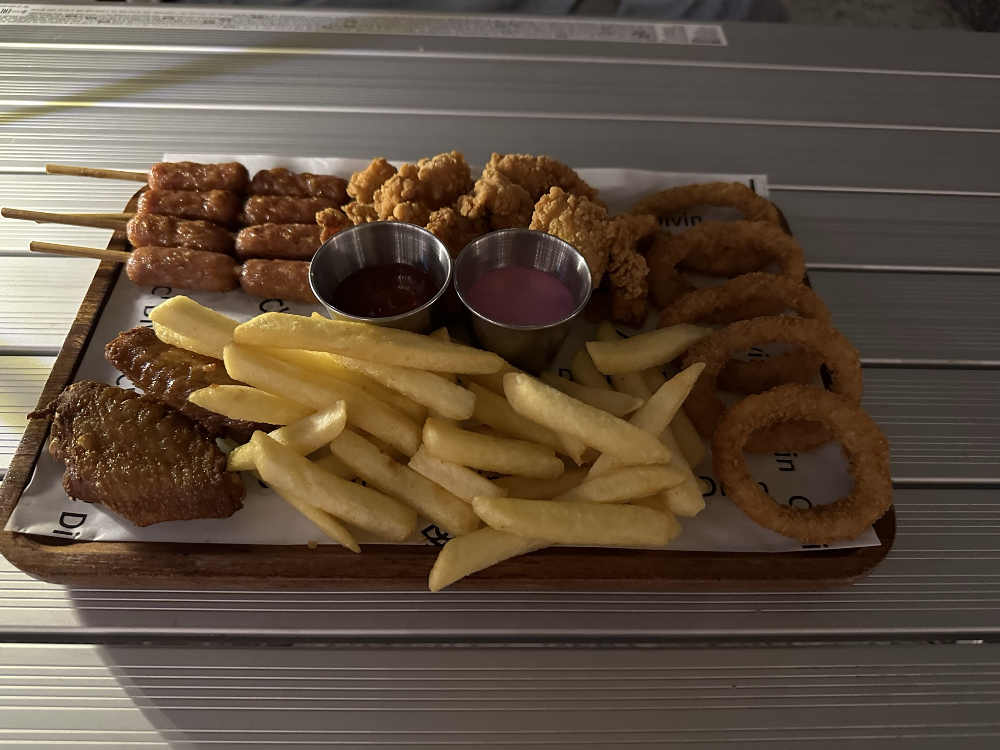
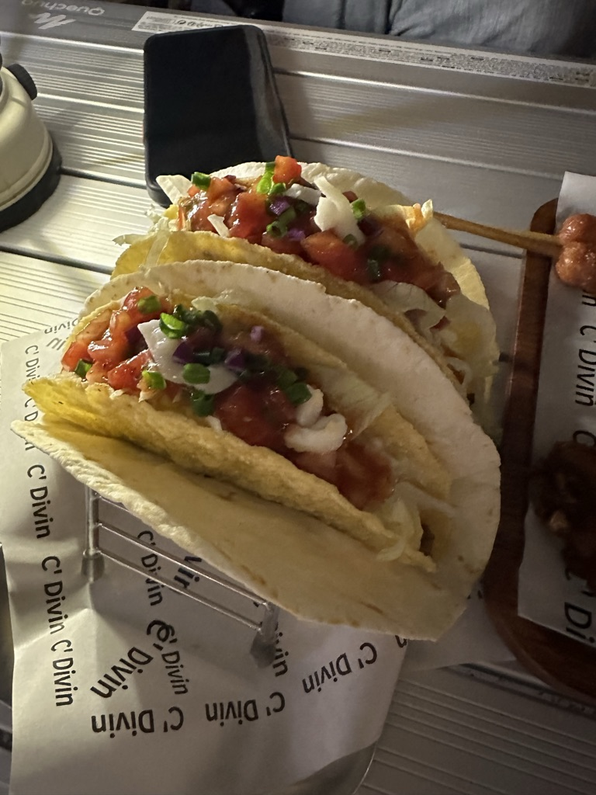
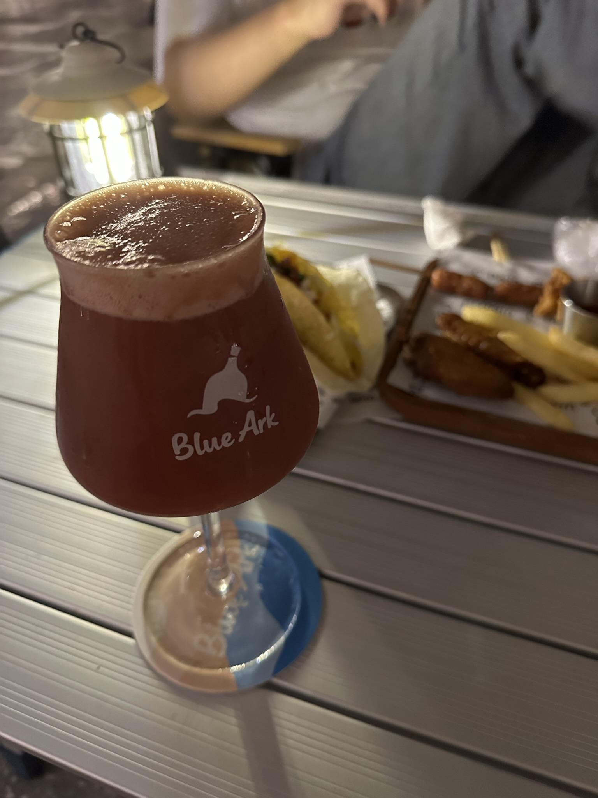
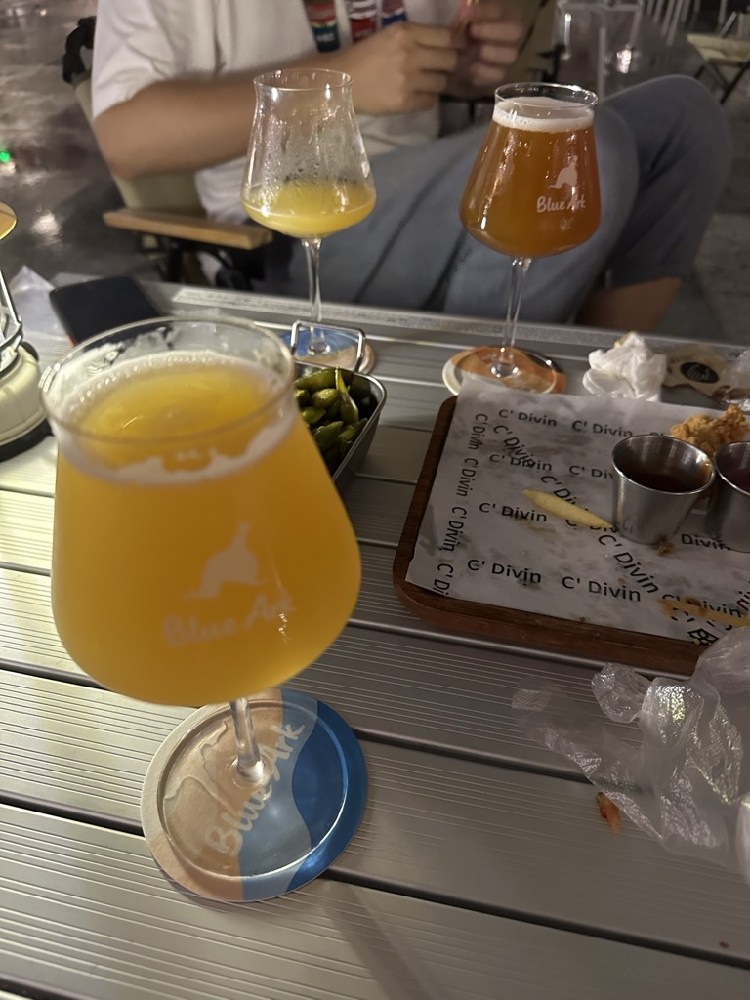

现在是2023年08月12日早上4点43分，我的眼睛瞪得像铜铃。周六计划了好几件事情看起来都要泡汤了，因为涉及做较大额度钱方面的决策，在前一晚严重缺乏睡眠的状态下无法进行合理决策。
前几天听了一档播客节目事，播主安利了一个酒吧，被种了草，查了一下刚好在家和公司中间。昨天周五，下班后微信里摇了个同事就来了。

价格不算便宜，但想着来都来了，况且酒的味道还不错，伴随着小吃就又多喝了一杯。
小吃1，拼盘：

小吃2，taco：

第一杯的名字叫「朕的糖葫芦」，是一款山楂口味的啤酒：

第二杯叫「双城记」，苦度很高，对于喜欢喝美式的我来说很对口：

点第二杯的时候为了下酒又加了份毛豆，辣辣的很下酒。结果天空不作美下起了大雨，等了好久都没有转小雨的迹象，这种天气也打不上车，就冒雨走到地铁站乘地铁回家，到家已经11点半。
洗漱完过了0点，舍不得一天就这么过去、加上明天又到了周末，导致刷手机刷到了1点，结果躺下后就没有了困意，翻来覆去到三点多，又起来看了半小时书，之后吃了片安眠药躺到4点半还是无法入眠，就又起来开始写这篇文章。
实际上我自己是有酒精过敏的，每次喝完酒都会全身发红。而且我也明知酒精是一级致癌物，但每过一段时间还会想喝点，抱着小喝怡情的侥幸心理。昨晚喝的酒后劲还非常大，我在乘地铁回来的路上，如果再多坐一站可能就吐了。
每次喝多了都会难受，每次自己都会告诫自己以后不要再喝酒。同样晚睡也是，每次超过晚上11点半后就很难入睡，每次失眠都会告诫晚上早些上床做睡前准备，睡前远离手机。虽然一段时间内会有效，但自己是好了伤疤忘了疼。
每个人都有适合自己的作息方式，按照睡眠类型来分有两种：
- 晨型人又称云雀型，生物钟更快一些，能在早上自然醒来，白天不容易疲惫，晚上也倾向于早早休息；
- 夜型人又称猫头鹰型，他们大多是夜猫子，爱晚睡晚起；
我无疑是云雀星，白天也没有午睡习惯。但我很羡慕周五晚上去嗨，然后利用周末补觉的那些人，我自己尝试了多次后发现真的不适合自己，毕竟这些东西都是基因里已经决定了的。
我在昨天属实算「纵欲」了，因为最近一段时间睡眠质量不错，就放松了警惕，白天喝了两杯咖啡，上午一杯、下午一杯，晚上还喝了度数较高的啤酒，为了配酒还吃了高热量实物，深夜又刷了很久手机。
有必要给自己约法三章了，虽然之前也已经约法过，但希望这次是最后一次…
- 每天最多喝一杯咖啡，如果前一晚没睡好可以考虑加浓。下午2点后禁止喝咖啡！
- 任何场合都要远离酒精制品，包括团建、家庭聚会。
- 晚上10点半后不再看手机（工作内容，比如业务报警除外）。
再补充一个让我有点难过的事情，凌晨4点多我决定不再尝试入睡，起来写这篇文章前，看了眼手机才注意到微信里有一条昨天晚上9点40多的语音消息，念念和我说她要一个人睡了，还给我发了照片。我当时在喝酒，没有看到也没有回复她，她当时一定很期待我的回复吧。